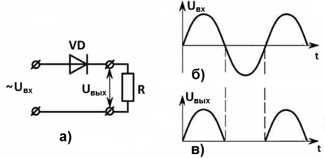
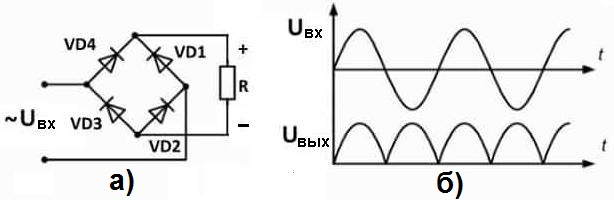
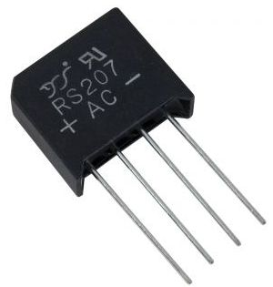
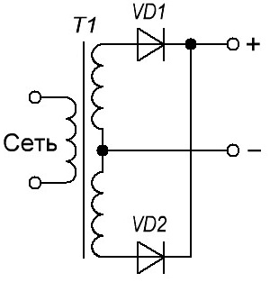
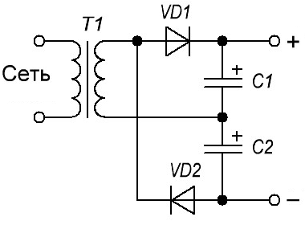
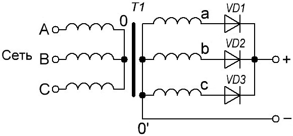
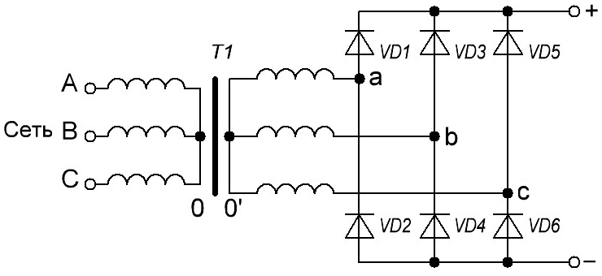

Выпрямители
Выпрямитель - устройство, предназначенное для преобразования переменного напряжения в постоянное. Основное свойство выпрямителя - сохранение направления протекания тока при изменении полярности входного напряжения.
По количеству выпрямленных полуволн выпрямители делят на однополупериодные и двухполупериодные.
По числу фаз силовой сети различают однофазные, двухфазные, трехфазные и шестифазные выпрямители.
Однофазный однополупериодный выпрямитель
Однофазный однополупериодный выпрямитель пропускает на вход одну полуволну питающего напряжения.

Рис. 1 - Схема и принцип работы однофазного однополупериодного выпрямителя
Во время положительного полупериода, диод находится в открытом положении и пропускает через себя ток на нагрузку. Когда приходит очередь отрицательного полупериода, устройство запирается, и питание на нагрузку не поступает. То есть происходит как бы отсечение отрицательной полуволны (на самом деле это не совсем верно, поскольку при данном процессе всегда имеется обратный ток, его величина определяется характеристикой Iобр).
В результате, как видно из графика (рис. 1), на выходе мы получаем импульсы, состоящие из положительных полупериодов, то есть, постоянный ток. В этом и заключается принцип работы выпрямительных полупроводниковых элементов.
Импульсное напряжение, на выходе такого выпрямителя подходить только для питания малошумных нагрузок, примером может служить зарядное устройство для кислотного аккумулятора фонарика.
На практике такие схемы находят ограниченное применение в связи с плохим использованием трансформатора и сглаживающего фильтра. Простота конструкции является единственным её достоинством.
К числу недостатков однодиодного выпрямителя можно отнести:
- Низкий уровень КПД, поскольку отсекаются отрицательные полупериоды, эффективность устройства не превышает 50%.
- Напряжение на выходе примерно вдвое меньше, чем на входе.
- Высокий уровень шума, что проявляется в виде характерного гула с частотой питающей сети. Его причина – несимметричное размагничивание понижающего трансформатора (собственно именно поэтому для таких схем лучше использовать гасящий конденсатор, что также имеет свои отрицательные стороны).
Однофазный мостовой выпрямитель (диодный мост)
Однофазный мостовой выпрямитель является двухполупериодным выпрямителем. Существенно отличие такой схемы (от однополупериодной) заключается в том, что напряжение на нагрузку подается в каждый полупериод. Из-за удвоенного количества диодов ограничено его применение при низких напряжениях. Трансформатор в такой схеме используется наиболее полно.

Рис. 2 - Схема и принцип работы диодного моста
Как видно из приведенного рисунка в схеме задействовано четыре полупроводниковых выпрямительных элемента, которые соединены таким образом, что при каждом полупериоде работают только двое из них. Распишем подробно, как происходит процесс:
- На схему приходит переменное напряжение Uвх. Во время положительного полупериода образуется следующая цепь: VD4 – R – VD2. Соответственно, VD1 и VD3 находятся в запертом положении.
- Когда наступает очередность отрицательного полупериода, за счет того, что меняется полярность, образуется цепь: VD1 – R – VD3. В это время VD4 и VD2 заперты.
- На следующий период цикл повторяется.
Как видно по результату (рис. 2,б), в процессе задействовано оба полупериода и как бы не менялось напряжение на входе, через нагрузку оно идет в одном направлении. Такой принцип работы выпрямителя называется двухполупериодным.
Его преимущества очевидны:
- Поскольку задействованы в работе оба полупериода, существенно увеличивается КПД (практически вдвое).
- Пульсация на выходе мостовой схемы увеличивает частоту также вдвое (по сравнению с однополупериодным решением).
- Как видно из графика (рис. 2,б), между импульсами уменьшается уровень провалов, соответственно сгладить их фильтру будет значительно проще.
- Величина напряжения на выходе выпрямителя приблизительно такая же, как и на входе.
Помехи от мостовой схемы незначительны, и становятся еще меньше при использовании фильтрующей электролитической емкости. Благодаря этому такое решение можно использовать в блоках питания, практически, для любых радиолюбительских конструкций, в том числе и тех, где используется чувствительная электроника.
Заметим, совсем не обязательно использовать четыре выпрямительных полупроводниковых элемента, достаточно взять готовую сборку в пластиковом корпусе.

Рис. 3 - Диодный мост в виде сборки
Такой корпус имеет четыре вывода, два на вход и столько же на выход. Ножки, к которым подключается переменное напряжение, помечаются знаком «~» или буквами «AC». На выходе положительная ножка помечается символом «+», соответственно, отрицательная как «-».
На принципиальной схеме такую сборку принято обозначать в виде ромба, с расположенным внутри графическим отображением диода.
На вопрос что лучше использовать сборку или отдельные диоды нельзя ответить однозначно. По функциональности между ними нет никакой разницы. Но сборка более компактна. С другой стороны, при ее выходе из строя поможет только полная замена. Если же в этаком случае используются отдельные элементы, достаточно заменить вышедший из строя выпрямительный диод.
Другие типы выпрямителей
Двухфазный двухполупериодный выпрямитель
Двухфазный двухполупериодный выпрямитель представляет из себя два параллельно соединенных однофазных однополупериодных выпрямителя. Характеризуется улучшенным использованием трансформатора и сглаживающего фильтра. Другое название такого выпрямителя - выпрямитель со средней точкой.

Однофазный выпрямитель с удвоением напряжения
Однофазный выпрямитель с удвоением напряжения представляет собой последовательное соединение однополупериодных выпрямителей. В первом полупериоде через диод VD1 заряжается конденсатор C1, а во втором полупериоде через диод VD2 заряжается конденсатор C2. Выходное напряжение представляет собой сумму напряжений на конденсаторах - удвоенную амплитуду напряжения вторичной обмотки.

Трехфазный выпрямитель с нулевой точкой
Трехфазный выпрямитель с нулевой точкой обладает значительно меньшими пульсациями выходного напряжения и их утроенной частотой по сравнению с однофазным двухполупериодным выпрямителем. Этой позволяет упростить фильтр а иногда и вообще обойтись без него. Но такой схеме присуще подмагничивание трансформатора постоянным током, что ухудшает его использование.

Трехфазный мостовой выпрямитель
Трехфазный мостовой выпрямитель (схема Ларионова) по сравнению с предыдущей схемой характеризуется отсутствием подмагничивания трансформатора, еще меньшим коэффициентом пульсаций, и их вдвое большей частотой.

Таблица 1
| Характеристика | Тип выпрямителя | |||
|---|---|---|---|---|
| Однофазный со средней точкой | Однофазный мостовой | Трехфазный с нулевой точкой | Трехфазный мостовой | |
| Действующее напряжение вторичной обмотки (фазное), U2 | 2×1,11Uн | 1,11Uн | 0,855Uн | 0,43Uн |
| Действующий ток вторичной обмотки, I2 | 0,785Iн | 1,11Iн | 0,58Iн | 0,82Iн |
| Действующий ток первичной обмотки, I1 | 1,11Iн / n | 1,11Iн / n | 0,48Iн / n | 0,82Iн / n |
| Расчетная мощность трансформатора, Pтр | 1,48Pн | 1,23Pн | 1,35Pн | 1,045Pн |
| Обратное напряжение на диоде, Uобр | 3,14Uн | 1,57Uн | 2,1Uн | 1,05Uн |
| Среднее значение тока диода, Iд ср | 0,5Iн | 0,5Iн | 0,33Iн | 0,33Iн |
| Действующее значение тока диода, Iд | 0,785Iн | 0,785Iн | 0,587Iн | 0,58Iн |
| Амплитудное значение тока диода, Iдm | 1,57Iн | 1,57Iн | 1,21Iн | 1,05Iн |
| Частота основной гармоники пульсаций | 2f | 2f | 3f | 6f |
| Коэффициент пульсаций выходного напряжения, Kп | 0,67 | 0,67 | 0,25 | 0,057 |
- Uн=NдUпр+Uв - расчетное значение напряжения на нагрузке
- Nд - число последовательно включенных диодов
- Uпр - прямое падение напряжения на диоде
- Uв - среднее значение выпрямленного напряжения
- Iн - расчетное значение тока через нагрузку
- n=U1/U2 - коэффициент трансформации
- Pн - расчетное значение мощности нагрузки
- f - частота питающей сети
Источники
asutpp.ru - Выпрямительные диоды: устройство, конструктивные особенности и основные характеристики